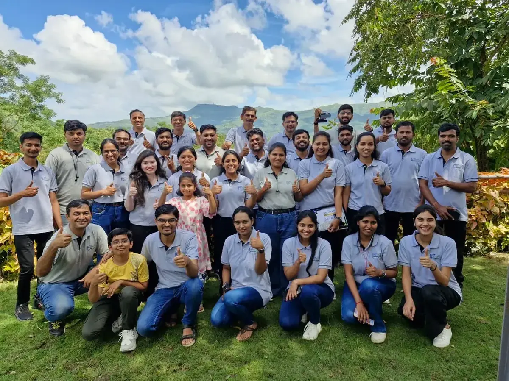
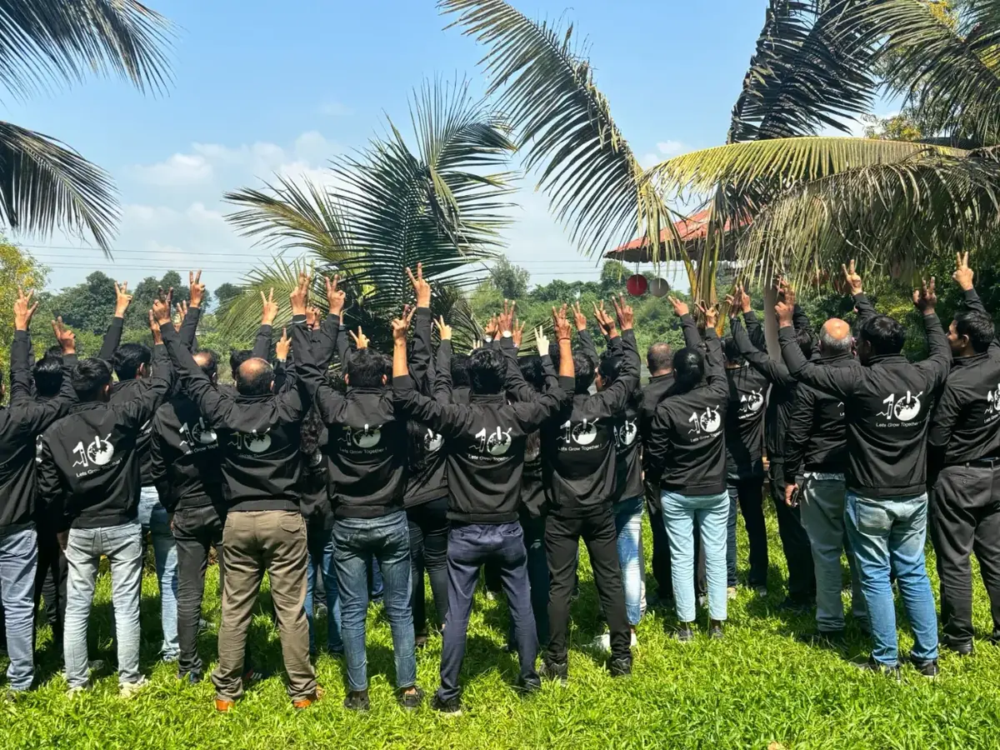
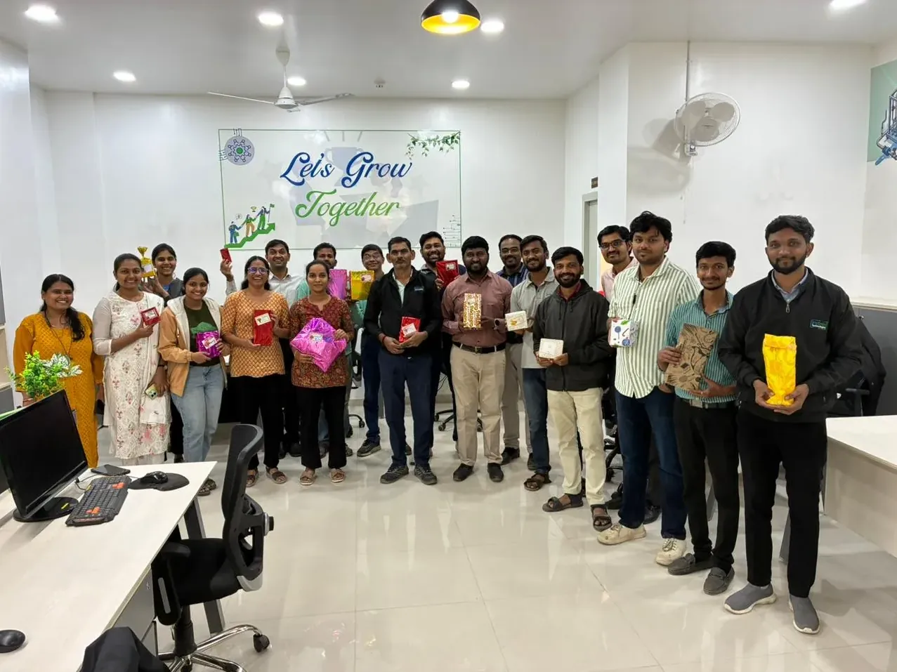
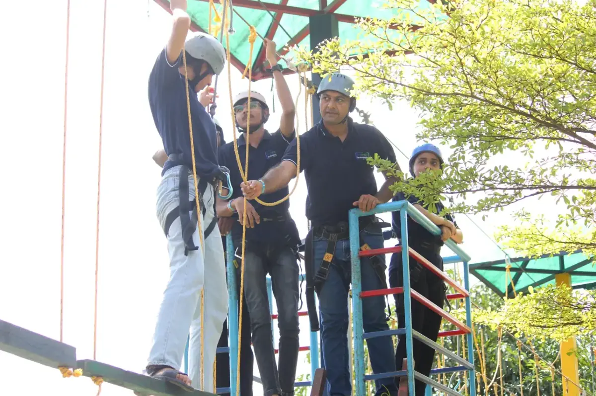
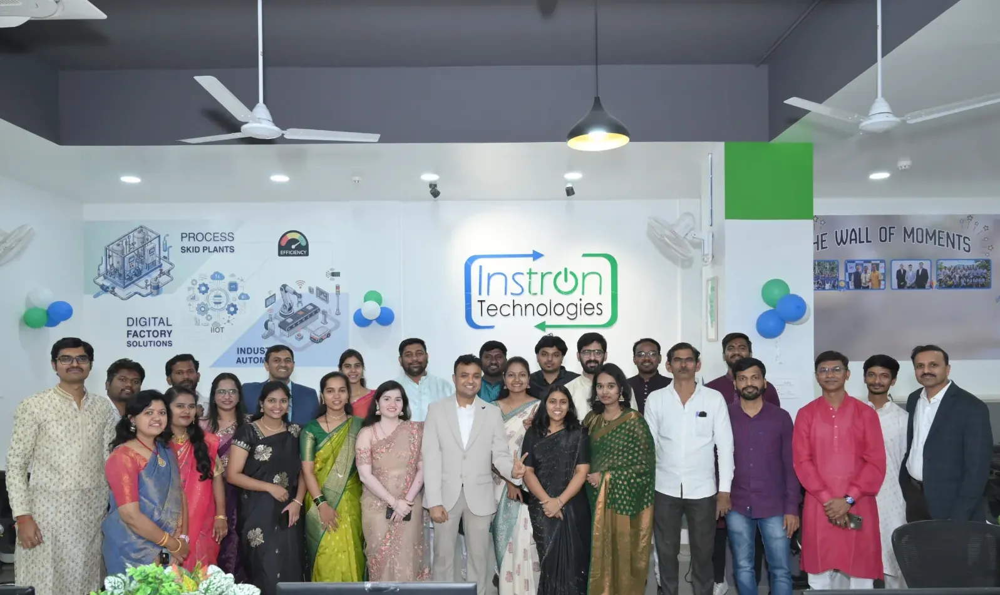

À propos · Carrières
Travaillez sur des systèmes qui doivent fonctionner.
Travaillez sur de vrais projets d’ingénierie en Usines de procédé sur skid, Automatisation industrielle et PlantON™, en conception, instrumentation, automatisation, TI, intégration, essais et réalisation de projets.

- Toronto · PuneOù travaillent nos équipes d’ingénierie
- Quatre disciplinesProcédé, automatisation, données et projets
- Étudiants bienvenusStages, projets de fin d’études et visites d’usine
La vie chez Instron Technologies
Une équipe qui apprend, célèbre et grandit ensemble.
Les nouveaux membres de l’équipe reçoivent une formation structurée et les ingénieurs expérimentés suivent des cours avancés. En dehors des projets, nous prenons le temps de nous réunir, de renforcer l’esprit d’équipe, de pratiquer des sports et de faire des randonnées.




Notre culture de travail
Curiosité et responsabilisation, fondées sur les preuves techniques.
L’apprentissage est le plus utile lorsqu’il est lié à une véritable décision technique.
Poser la bonne question.
Comprendre le procédé et son usage prévu avant de choisir les équipements ou les logiciels.
Assumer la responsabilité du transfert.
Documenter ce qui est terminé, ce qui reste à résoudre et qui prend la prochaine décision.
Apprendre des essais.
Les plans, les dossiers d’acceptation et les constatations sur site doivent améliorer le prochain projet.
Disciplines
Le travail est multidisciplinaire, mais les responsabilités restent claires.
Ingénierie de procédés et de mise à l’échelle
P&ID, définition des équipements et instruments, intégration de procédés, plages de fonctionnement et documentation des essais.
Automatisation et contrôle industriels
Conception PLC/HMI/SCADA, E/S, panneaux de commande, mise en service et résolution de problèmes sur des systèmes industriels en fonctionnement.
PlantON™ et données industrielles
Contexte de production, mesure, rapports, traçabilité et intégration des données avec une gestion rigoureuse des systèmes sources.
Ingénierie de projets
Portée, interfaces d’approvisionnement, préparation des essais, documentation qualité, coordination des intervenants et transfert.
Étudiants et début de carrière
Commencez par de vrais travaux d’ingénierie.
Stages, projets de fin d’études et collaboration industrie-université, selon les projets en cours et la disponibilité de l’équipe. Une composante de notre programme industrie-université.
Stages
Travaillez aux côtés des équipes de projet sur des mandats de procédé, d’automatisation ou de données.
Projets de fin d’études
Des projets fondés sur des équipements, des instruments et des données d’exploitation réels.
Visites d’usine et conférences invitées
Découvrez les skids, les panneaux de commande et la mise en service en pratique, et écoutez nos ingénieurs.
Comment postuler
Dites-nous ce que vous voulez concevoir.
Nous acceptons les candidatures en tout temps. Les postes ouverts sont affichés ici lorsqu’ils sont disponibles.
Renseignez-vous sur les possibilitésDans votre candidature, veuillez inclure
- Votre discipline d’ingénierie ou votre rôle préféré
- Qualifications et expérience pertinentes
- Compétences techniques ou projets (exemples publics ou anonymisés seulement)
- Lieu de travail préféré
- Votre CV ou profil professionnel
Veuillez omettre les numéros d’identification, la date de naissance, les photos et les autres renseignements sensibles. Nous utilisons vos renseignements uniquement pour examiner votre candidature et les supprimons après 12 mois si vous n’êtes pas embauché. Confidentialité.
Grandissons ensemble
Construisez les systèmes qui font fonctionner l’industrie.
Découvrez les possibilités en ingénierie et rejoignez une équipe multidisciplinaire qui travaille sur des technologies industrielles.